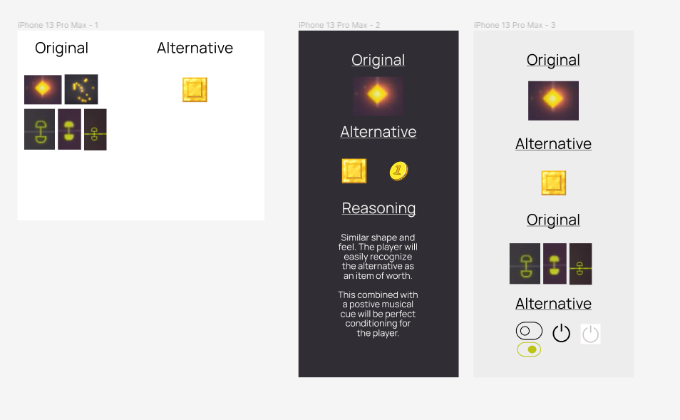
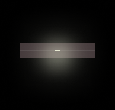
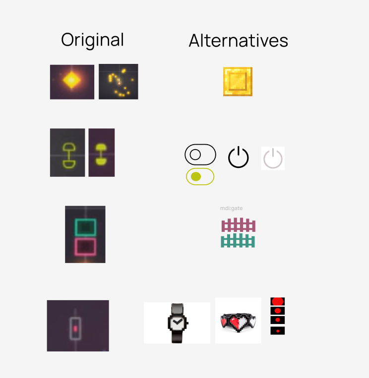

Linelight: Game Mechanics Documentation and UI Analysis
A freelance engagement for a law firm evaluating the acquisition of the indie game Linelight: documenting every game mechanic stage by stage and proposing alternative UI icons to improve player comprehension.
- Role
- Game analyst, technical writer, UI consultant
- Team
- Solo freelance
- Timeline
- 2022
- Audience
- A legal team outside game development

The brief
A law firm wished to purchase Linelight from its creator and needed the game fully documented before acquisition, both to understand what they were buying and to assess its design value.
The brief was unusual: translate a purely visual, non-verbal game into structured written mechanics documentation, then recommend UI improvements that would make the game more legible to new players without losing its minimalist aesthetic.
The method
Each stage was played and documented in order, capturing the visual vocabulary the game uses to teach mechanics without text: how unfilled versus filled icons signal state, how color communicates danger versus interaction, and how animation substitutes for instruction.
UI alternatives were researched and wireframed for the four core icon types: the collectible diamond, the switch mechanic, the gate system, and the health and lives indicator. Each alternative was evaluated against the original on shape recognition, platform convention, and player conditioning.
Mechanics documentation
The documentation traces the game from Stage 1-1 through the full world progression, covering switch puzzles, colored bridge mechanics, enemy behavior, key and lock systems, snake and copy mechanics, momentum-based physics puzzles, timed enemies, one-way paths, treadmills, color-coded pathways, and the nonlinear open-world structure that emerges in later worlds.
Each mechanic is described in terms of its visual introduction, the player's chain of inference, and its interaction logic.

What was delivered
- Stage-by-stage mechanics documentation covering every world: switch puzzles, colored bridges, enemy types, key systems, snake mechanics, physics puzzles, timed nodes, and open-world structure
- Visual vocabulary analysis: how unfilled and filled states, color coding, animation, and sound cues combine to replace written instruction
- Four UI icon categories analyzed: the collectible (diamond), the switch (dumbbell), the gate, and the health and lives indicator
- Alternative icons proposed and reasoned for each category, evaluated on shape familiarity, platform convention, and positive conditioning potential
- A structurally flawed puzzle that forces players to warp between worlds, flagged as a design integrity issue relevant to the acquisition's valuation
UI alternatives
The original icons are abstract and visually consistent with the game's dark, minimalist aesthetic, but they rely heavily on learned association rather than prior knowledge.
The proposed alternatives prioritize immediate recognition: a coin-style collectible for the diamond, toggle switches for the dumbbell mechanic, fence icons for gates, and watch or traffic light alternatives for the health indicator. Each was chosen to carry the same shape and feel as the original while reducing the inference load for new players.
